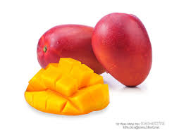

柴檨仔，亦即一般所稱「土芒果」、「本地種」、「在來種」
芒果肉含有豐富的維生素A、維生素C和維生素D，亦有醣類、繕食纖維、葉酸、鈣、磷、鐵、鉀、鎂等微量元素。
芒果具有可抑制腦細胞死亡的效果，食用冷凍芒果，有助於讓使用過度的大腦得到舒緩。中醫學認為，
芒果性涼、具生津解渴及止暈眩等功效，甚至可治胃熱煩渴、嘔吐不適及暈車、暈船等症，只需以芒果核煎水一大碗，
入茶飲用，就有退熱之效。芒果不利腎臟，患有急性或慢性腎炎的病人應忌食芒果。芒果含多酚、磷等礦物質，
能避免體內自由基過多，傷害細胞，造成身體老化，適量食用，能補充許多抗氧化的營養素，延緩老化現象。
此外，美國德州農工大學（TAMU）研究發現，芒果中所含有的多酚類物質，可降低罹患乳癌、大腸癌風險。
研究人員將芒果多酚提取物用於大腸癌、乳癌、肺癌、血癌和前列腺癌，發現芒果對所有測試的癌症都有一定的影響，
但對於乳癌和大腸癌影響最為明顯。
首頁
第3頁
第4頁
第5頁